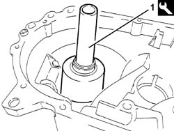
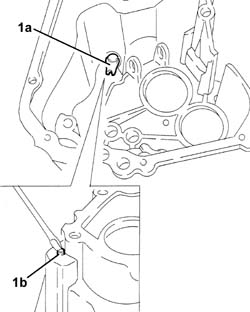
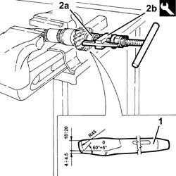
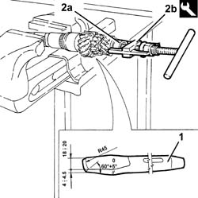
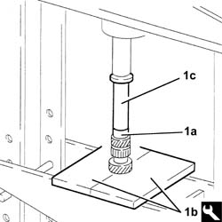
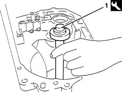

2110B32 MANUAL GEARBOX (5 SPEED) WITH DIFFERENTIAL - DISMANTLE AND REBUILD - WASH AND CHECK PARTS - REPLACE SYNCHRONISERS, INNER CONTROLS, GEARS, SHAFTS AND BEARINGS
- Path
- Procedures > 21 GEARBOX UNIT > 2110 MANUAL GEARBOX WITH DIFFERENTIAL > 2110B MANUAL GEARBOX WITH DIFFERENTIAL GEARS AND SYNCHRONISERS > 2110B32 MANUAL GEARBOX (5 SPEED) WITH DIFFERENTIAL - DISMANTLE AND REBUILD - WASH AND CHECK PARTS - REPLACE SYNCHRONISERS, INNER CONTROLS, GEARS, SHAFTS AND BEARINGS
- Kind
- repair procedure (removal / refitting; the operation number is the code)
- Applies to
- engines: 3.2 V6, 1.9 JTD 16V; all production periods
- Interactive page
- https://sloeber94.github.io/elrnDB-aGt/en/#/125001242
Applies to: engines: 3.2 V6, 1.9 JTD 16V; all production periods
 Removing
Removing
 Refitting
Refitting1. Remove the differential support bearing outer races using the tool.
 | Name | Country |
|---|---|---|
1 | Extractor | 1.821.003.000 |

Applies to: engines: 3.2 V6, 1.9 JTD 16V; all production periods
1. Remove the guide pin for fitting reverse gear (1a) after having removed the outer staking (1b).

Applies to: engines: 3.2 V6, 1.9 JTD 16V; all production periods
1. Move the layshaft front bearing inner race as far away as necessary, using a special chisel.
2. Remove the layshaft front bearing inner race (2a) using the tool (2b).
| Name | Country |
|---|---|---|
2b | Extractor | 1.821.117.000 |

Applies to: engines: 3.2 V6, 1.9 JTD 16V; all production periods
1. Move the layshaft front bearing inner race as far away as necessary, using a special chisel.
2. Remove the mainshaft front bearing inner race (2a) using the tool (2b).
| Name | Country |
|---|---|---|
2b | Extractor | 1.821.117.000 |

Applies to: engines: 3.2 V6, 1.9 JTD 16V; all production periods
Refitting
Removing1. Fit the mainshaft front bearing inner race (1a), using a hydraulic press, the half plates (1b) and the fitting tool (1c).
| Name | Country |
|---|---|---|
1b | Half-plates | 1.820.022.000 |

Applies to: engines: 3.2 V6, 1.9 JTD 16V; all production periods
Fit the inner race for the layshaft front bearing using a hydraulic press and a flat-based fitting tool.
Fit the guide pin for fitting reverse gear and fix through external staking.
1. Fitting differential support bearing outer races using the tool.
| Name | Country |
|---|---|---|
1 | Fitting tool | 1.821.028.000 |

Applies to: engines: 3.2 V6, 1.9 JTD 16V; all production periods